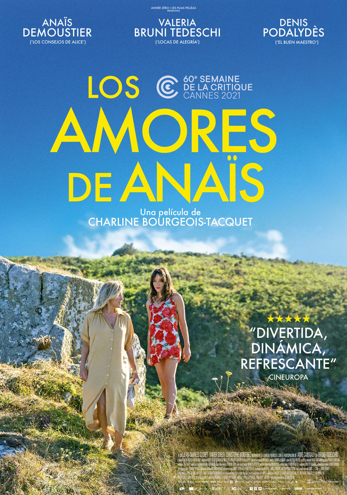

Los amores de Anaïs
Sinopsis
Anaïs tiene 30 años y es inestable en lo económico y en el amor. Un día conoce a Daniel y este siente un profundo flechazo por ella. Pero Daniel vive con Emilie que rápidamente también se siente cautivada por Anaïs. Esta es la historia de una joven parisina inquieta y un tanto alocada con un profundo deseo de amar.

La mancha negra
Sinopsis
Matilde Cisneros es una anciana que vive junto a sus tres hijas en un pequeño pueblo del interior de Andalucía a principios de los años 70. Tras la muerte de Matilde, sus hijas se disponen a preparar su velatorio, a pesar de que todo el pueblo les da la espalda. La herencia de Matilde convierte la codicia y el propio interés en el eje de la historia.

The medium
Sinopsis
En una aldea de Tailandia, sus habitantes creen que todas las cosas poseen un espíritu. Un equipo documental sigue a Nim, una chamán que nota extraños signos en su sobrina Mink, sugiriendo que será poseída por una diosa. Pero el comportamiento de la joven se vuelve extremo y Nim sospecha que no es la deidad que esperaban.

Ainbo
Sinopsis
La pequeña Ainbo vive en lo más profundo de la selva amazónica. Tras perder a su madre, esta joven arquera emprende un viaje para salvar a su pueblo del poder destructor del hombre blanco. En su viaje épico la acompañan sus guías espirituales: Dillo, un armadillo, y Vaca, un tapir de gran tamaño, en un espectacular entorno natural.

Cásate conmigo
Sinopsis
La superestrella Kat Valdez (Jennifer Lopez) y el profesor Charlie Gilbert (Owen Wilson), dos perfectos desconocidos, deciden casarse y luego conocerse. En un mundo dominado por los clics y seguidores, este romance busca emociones reales, contrastando el amor sobre la fama, el matrimonio y las redes sociales.

Tailor (El sastre)
Sinopsis
Nikos vive en el ático de la sastrería familiar. Cuando el banco amenaza con embargar la sastrería y su padre cae enfermo, Nikos entra en acción: con una maravillosa, aunque extraña sastrería sobre ruedas, consigue reinventarse a sí mismo aportando estilo y confianza a las mujeres de Atenas con preciosos vestidos.